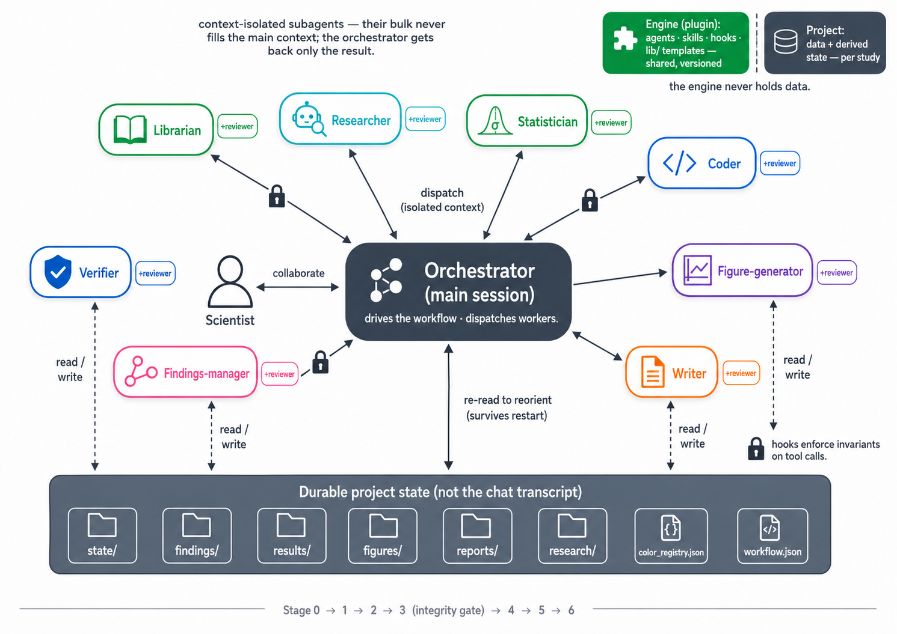

The architecture
The orchestrator & its workers
The main session drives the workflow and dispatches context-isolated subagents — only each result returns, never its bulk. Everything reads and writes durable project state, not the chat.
